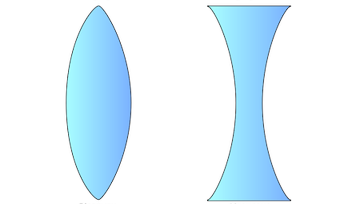
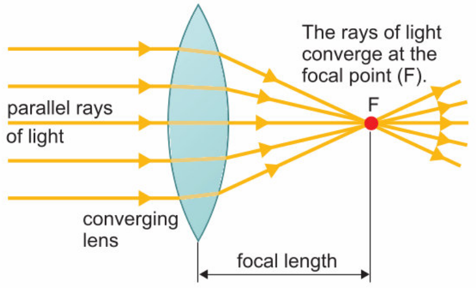
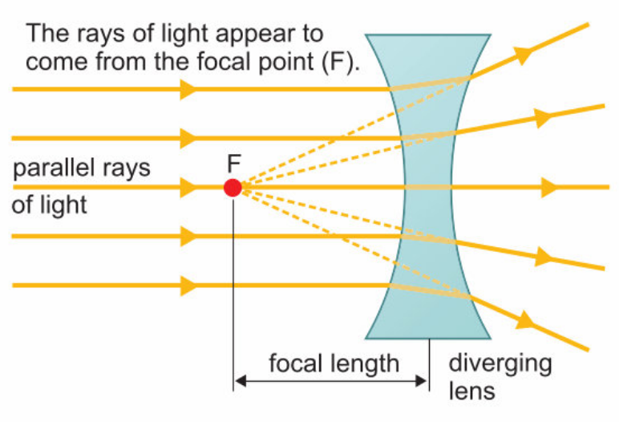
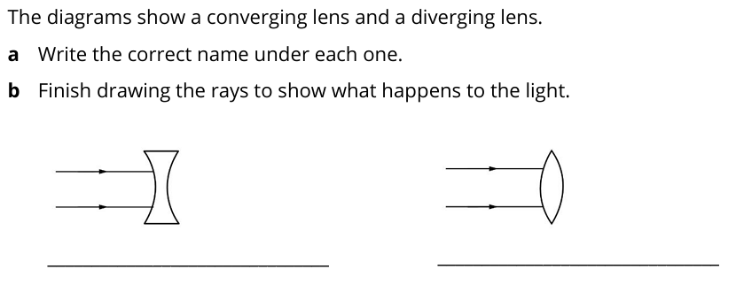
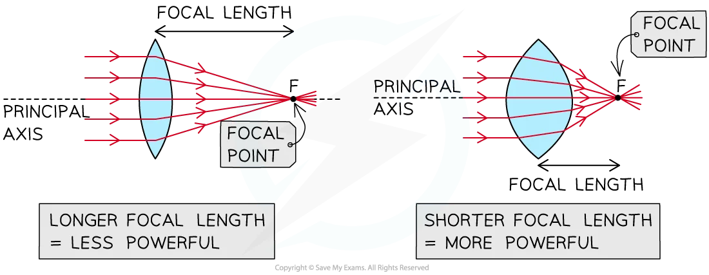
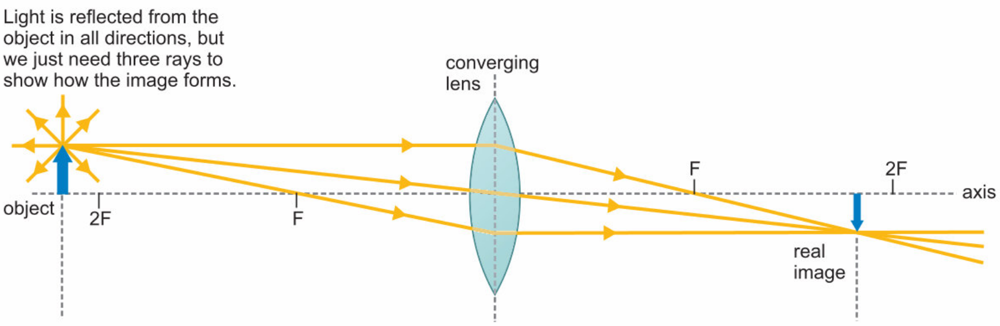
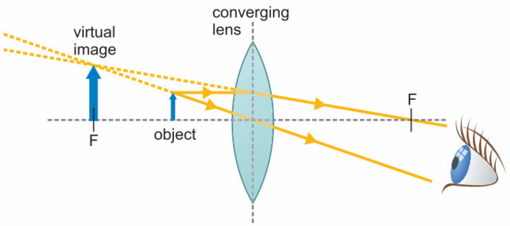
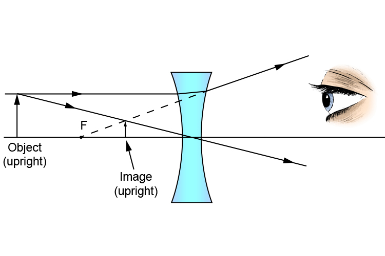
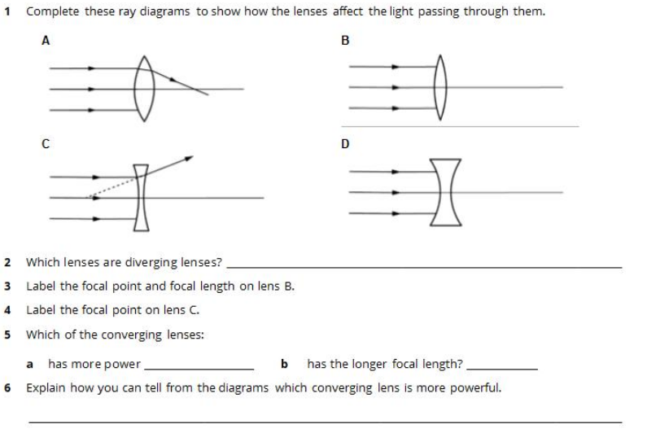
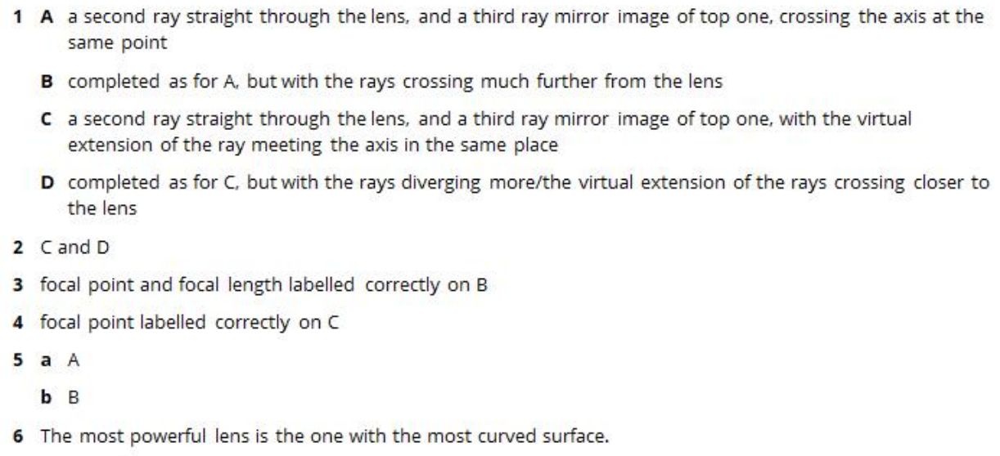

What can you use to split up white light into the colours of the spectrum?
prism
What is the name for a transparent material that can turn white light into coloured light?
filter
Which colour or colours in white light are reflected by a piece of white paper?
all of them
Which colour or colours in white light are reflected by a blue balloon?
blue








Light rays meet to form an image.
real image
This kind of image cannot be formed on a screen.
virtual image
This kind of image is the only one formed by diverging lenses.
virtual image
This kind of image is formed on a screen.
real image

